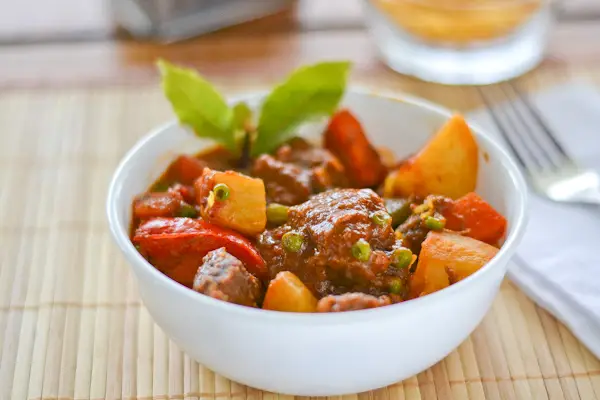

Beef Kaldereta Recipe

Beef Kaldereta (Caldereta) is a popular Filipino stew that is served during parties and holidays.
There are so many great Filipino stews and a couple of my favorites that I’ve shared before include chicken afritada and pinakbet. Traditionally, kaldereta is made using goat meat. However, goat is not always easily accessible, so beef, chicken or pork may be used instead. Tomato sauce, onion, liver spread, bell pepper and cheese are usually part of the recipe as well. The purpose of the liver spread is to thicken and add flavor the sauce.
Ingredients
- 1 ½ lbs stewing beef cut into 1 inch cubes
- ½ cup vinegar
- 6 whole peppercorns crushed
- 4 cloves garlic crushed
- 4 tablespoons vegetable oil
- 1 onion sliced
- 1 cup tomato sauce
- 1 bay leaf
- 2 teaspoons sea salt
- 1 teaspoon sugar
- 2 cups water ,or more as needed
- 1 red bell pepper ,cut into strips
- 1 small carrot ,peeled and diced
- 1 potato ,peeled and diced
- 1 teaspoon Tabasco sauce or your favorite hot sauce
- ¼ cup liver spread
- ½ cup frozen peas
- Grated cheddar cheese ,optional
Instructions
- In a bowl, combine vinegar, crushed peppercorns and garlic. Stir in the beef, cover with plastic wrap and let marinate in the fridge for 1 hour.
- While the beef is marinating, prepare all the vegetables needed for this dish./li>
- After an hour, remove the beef from the marinade and let it drain for few minutes.
- Using a heavy pan, brown the beef in hot oil a few pieces at a time. Transfer into a plate and set aside.
- Using the same pan, sauté the onion until translucent. Return the browned beef to the pan. Add tomato sauce, bay leaf, salt, sugar and water. Bring to a boil, lower the heat, cover and simmer for 1 ½ to 2 hours or until the beef is tender, stirring constantly and adding more water as needed.
- Add the red pepper, potato, carrot and hot sauce. Cover and simmer for 10 more minutes.
- Add the liver paste and green peas. Stir and cook for another 5 minutes.
- Transfer into a serving plate and top with grated cheese, if using.
- Serve as is or with steamed rice.